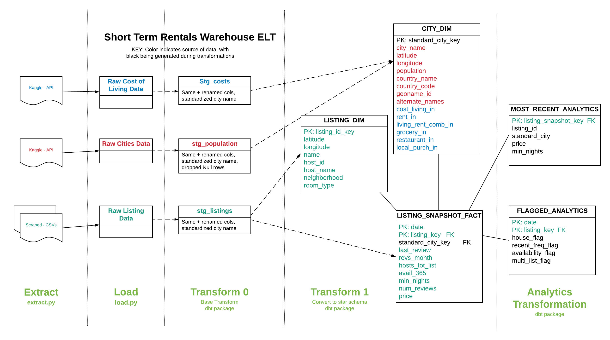
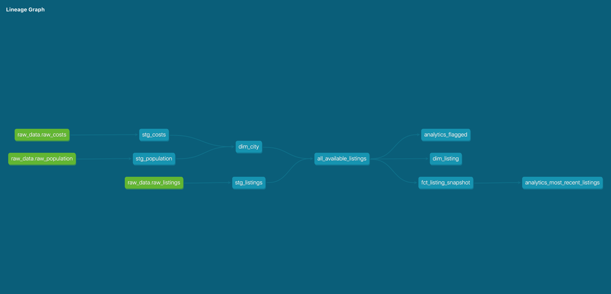

Short-Term Rental Data Warehouse
Global Short-Term Rentals - a Data Warehouse and Dashboard
The global short-term rentals project is a full data pipeline and warehouse. A dashboard allows for the exploration of the impact of short-term rental listings (Airbnb) on housing. Data is pulled from three separate public datasets and consists of over 35 million records from 2015-2020. The tools used include Python, Snowflake, DBT, and Metabase.
Architecture:
Overview
- Python scripts perform API calls and web scraping for extraction and loading.
- Snowflake is used as a cloud-based data warehouse.
- DBT is used for transformations, data testing, and data documentation.
- Metabase hosted on Heroku is used for data visualizations.
Data Sources
- Scraped data from:
- Kaggle
- World Cities Population and Location. CC0: Public Domain.
- Kaggle Cost of Living Indices. Original source Numbeo
ETL and Data Model

DBT Models
DBT was used for the transformation layer. DBT allows for automated analytics tools like:
- Revision control of transformation tables and views.
- Automated testing, including the testing of source data.
- Automated documentation creation. Here’s the documentation for this project.

Visualization
A video demonstration is available.
Screen shots:

Environment Setup:
To reproduce the warehouse, you will need to have these cloud-based accounts set up prior to running the remaining steps:
- You will need to have a Kaggle account and authenticate using an API token. For more information, read Kaggle’s API documentation.
- You will need a Snowflake account with sysadmin privileges. They offer a 30-day trial with up to $400 in free usage. This project uses well under that, and no credit card is required until the limits are reached.
To setup the warehouse:
- Download the repository and create a virtual environment.
- Install the required dependencies with
pip install -r requirements.txt. - Copy .env.example to a file called .env at the root level of the project. Add in relevant Snowflake and dbt environment variables.
- If using a bash shell, run
set -o allexport; source .env; set +o allexportto export credentials and other environment variables. You’ll need to make adjustments on a Windows machine.
Extract, load, and transform data:
- Setup users, databases, and warehouses on Snowflake. Use
src/create_warehouse.sqlas a guide. - To extract datasets (scraping and API calls), run
python src/extract.py. The script may take a few hours. - To load data, run
python src/load.py. Again, depending on your connection, will take awhile. - To install dbt dependencies, from dbt subdirectory run
dbt deps. - To transform data, from dbt subdirectory run
dbt run. - To test your data, from dbt subdirectory run
dbt test. - To generate documentation, from dbt subdirectory run
dbt docs generate, anddbt docs servefor locally hosted documentation.
Visualization:
- Download and install Metabase on the platform of your choice (I used Heroku).
- Follow setup instructions for an admin user and add your Snowflake credentials.
- Create a new dashboard.
- Create questions for each card based on the files in
visualizations/, adjusting the visualization component.
Author:
A personal project by Rebecca Sanjabi.